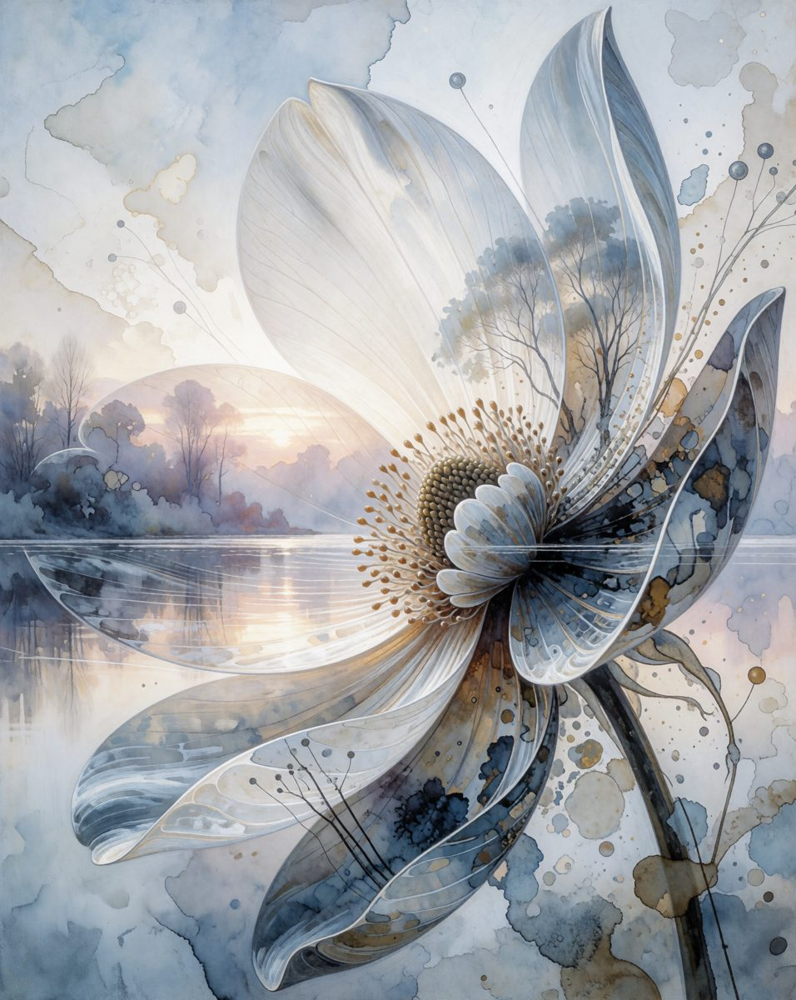
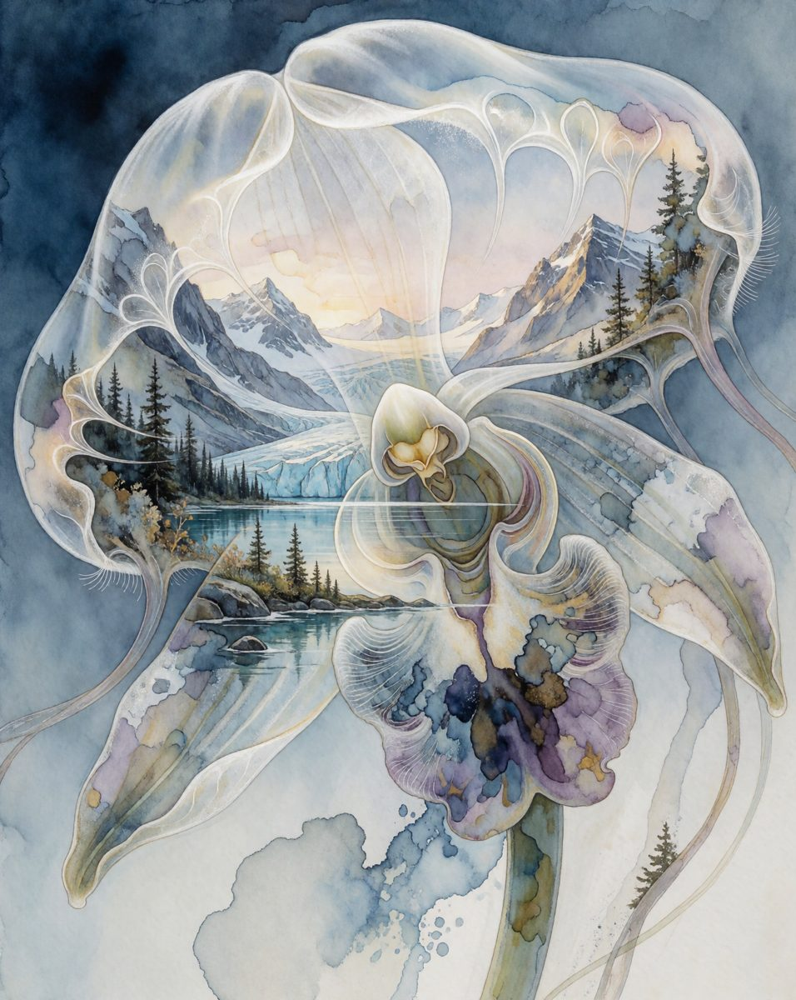
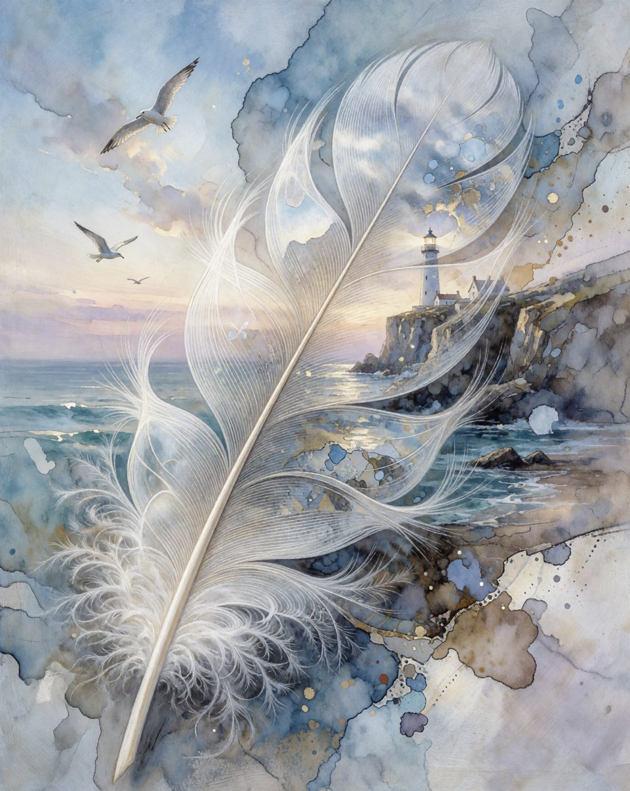

Огромный белый цветок с перламутровыми глянцевыми лепестками над туманным озером, чёрные силуэты листьев и деревьев, брызги туши. Тёмная, контрастная иллюстрация.
| Модель | Krea 2 Turbo |
| Размер | 2160×2688 |
| Сэмплер | Euler · 8 шагов · cfg 1 |
| Seed | 61641399332400 |
| Ресурсы | Animosity | 二次元, [KREA 2] Detail Slider @0.7, Lonecat’s Simple Speed Boost 🚀 Workflows | 简易加速工作流 (MiniMax H3, Krea 2, Qwen 2.1, ZIT, Klein_9b, Illustrious, Flux, Wan2.2, Qwen Image Edit) |
| Промпт | 1044 знаков, проза |
Автор работал на Animosity, аниме-файнтюне Krea 2 весом 25 ГБ, с Detail Slider 0.7. Файнтюн мы сознательно не качали. v0: наш Krea 2 Turbo с промптом поста. v1: плюс Detail Slider (11 МБ).
| LoRA | вес | триггер | статус |
|---|---|---|---|
| [KREA 2] Detail Slider | 0.7 | есть |
Скачать workflow · граф, которым сделан первый рендер (открыть в ComfyUI: перетащить файл в окно)



Близко, но не то. Композиция совпала: белый цветок, озеро, брызги. Но у нас светлая акварель, а у оригинала тёмный глянец и чёрные силуэты. Detail Slider картину почти не изменил.
Вывод: манеру задаёт файнтюн. Без него дальше не продвинуться, и это нормальный итог разбора: мы знаем, чего не хватает и сколько это весит.